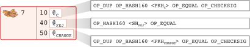
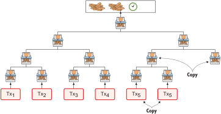
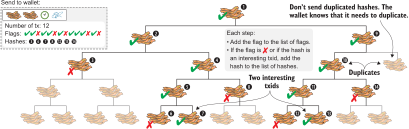
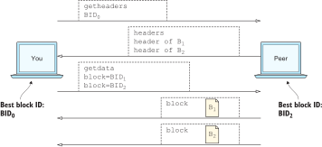

Appendix B: Answers to exercises
B.1. Chapter 2
-
256 bits.
-
32 bytes.
-
A cryptographic hash function.
-
061ais6*256 + (16 + 10) = 1,536 + 26 = 1,562in decimal form. The binary form of06is0000 0110, and the binary form of1ais0001 1010, so the full binary representation is0000 0110 0001 1010. -
No. If it was possible, the function wouldn’t be second-pre-image-resistant.
-
Properties 2 and 4 are lacking.
-
Second-pre-image resistance is stopping the attacker. The attacker needs to find an input that gives the same hash as a certain other input: the cat picture.
-
The money supply increase rate will decrease over time because the reward to Lisa halves every 4 years. This means the total amount of CT to ever be created will be about 21,000,000.
-
The coworkers have read access to the spreadsheet. They can watch the spreadsheet and verify that Lisa doesn’t reward herself too much or too often.
-
The private key is created using a random number generator of some sort. A simple one is a coin that you flip 256 times to generate your 256-bit private key. You can also use your operating system’s built-in random number generator.
-
The private key.
-
The message is hashed because you want signatures to be small and fixed in size. You don’t want the signatures to be big just because the signed message is big.
-
Mallory would need John’s private key to steal cookies from him. She would also need his name, John, to write into the email to Lisa, but that’s easily available in the spreadsheet.
-
Fred can use your public key to encrypt the message and send the encrypted message to you. You can then decrypt that message using your private key.
-
You sign the message using your private key and write the digital signature onto the note in the bottle. Fred can then verify that the signature is in fact made with your private key. He does this by using your public key to decrypt the signature and comparing the decrypted hash with the actual hash of the message. If they match, he can be sure the message is from you.
B.2. Chapter 3
-
The PKH is made short because a) it makes the spreadsheet smaller in size and b) it makes cookie token addresses (and Bitcoin addresses) shorter to write for a user.
-
Yes, you can. There’s a base58check decoding algorithm that does this.
-
It’s used by a payer to translate the recipient’s address into a PKH. The payer needs to write the recipient’s PKH in the email to Lisa.
-
Let’s base58-encode 0047 step by step:
-
Remove leading 00 bytes. There is one, which leaves you with 47.
-
Convert to a decimal number: 47 in hex is 4 × 16 + 7 = 71 in decimal.
-
Divide 71 by 58: 71 = 1 × 58 + 13. The quotient is 1, and the remainder is 13.
-
Divide the quotient, 1, by 58: 1 = 0 × 58 + 1. The quotient is 0, and the remainder is 1.
-
Look up the remainders 13 and 1. Result: E and 2.
-
Add a 1 for the removed 00 byte in step 1, which results in E21.
-
Reverse it: 12E. Done.
-
-
The 4-byte checksum.
-
He must make two separate payments. For example: payment 1 pays 2 CT from @1 to the cafe, and payment 2 pays 8 CT from @2 to the cafe. Another way is to first pay 2 CT from @1 to @2 and then pay 10 CT from @2 to the cafe.
-
Yes it is. Base58check-encode the PKHs to get the addresses.
-
No, because the spreadsheet contains PKHs. Because cryptographic hash functions are one-way functions, you can’t go from PKH to public key.
-
They can look at the amounts. Many of the 10 CT payments are probably cookie purchases.
-
The bad guy can’t steal cookie tokens because he needs the public key to exploit the flaw in the public key derivation function. The spreadsheet contains PKHs; the bad guy can’t get the public key from it.
-
The bad guy needs the private key to sign fraudulent emails to Lisa. Even though he can reverse RIPEMD160, he’d still need to pre-image attack SHA256 and reverse the public key derivation function to get to a working private key.
B.3. Chapter 4
-
bitcoin:155gWNamPrwKwu5D6JZdaLVKvxbpoKsp5S?amount=50 -
Each character corresponds to 6 bits of entropy because 26 = 64. Ten such characters make 60 bits of entropy, which corresponds to 60 coin flips.
-
The four problems:
-
Passwords are easily forgotten.
-
Randomness is hard.
-
The security of a password decreases as technology improves.
-
You need to keep track of two items: the backup and the password. This increases the risk that the backup is lost.
-
-
The seed is created by first generating a huge random number, then the random number is encoded as a mnemonic sentence, and lastly, the mnemonic sentence is used to generate the seed.
-
An xprv consists of a private key and a chain code.
-
An xpub consists of a public key and a chain code.
-
The xprv at path
m/2/1and the wanted index7. -
No, you would need xprv
m/2/1to derive xpubM/2/1/7'. You first derive hardened xprvm/2/1/7'fromm/2/1using hardened xprv derivation and then calculate the xpubM/2/1/7'fromm/2/1/7'. -
You can use the following procedure to get the master xprv:
-
Use master xpub
Mto derive xpubM/4and remember the left-half hash, L4. -
Use
M/4to derive the left-half hash L41 at index 1. -
Subtract L41 from the private key
m/4/1to get private keym/4. -
Subtract L4 from the private key
m/4to get private keym. -
mtogether with the chain code of xpubMis the master xprv.
-
-
Yes, you’d be able to steal all funds in any addresses because you can calculate the master xprv.
-
The victim could have used hardening to generate
m/4'instead. This way, you wouldn’t be able to get the master xprv. If you stolem/4'/1and the master xpub, you would only be able to steal funds on them/4'/1key. You wouldn’t be able to calculate theM/4'xpub. -
The employees can import the xpub for the counter sales account. They will then be able to generate any public keys under that account and thus generate as many addresses as they need without ever having to know any private keys.
-
Your (and Anita’s) wallet can generate 10 addresses ahead of time and monitor the spreadsheet for those addresses. If Anita gets paid to one of these addresses—probably the first of those 10—then your wallet won’t reuse that address when you request a payment from a customer. You would instead take the next unused address.
B.4. Chapter 5
-
You would spend the 4 CT and the 7 CT outputs. The new outputs would be 10 CT to the cafe and 1 CT in change to an address you control.
-
They’re used in inputs to reference transactions from which to spend outputs.
-
Because you can’t spend part of a transaction output. You either spend the output or you don’t. If the spent output contains more value than you’re paying, you need to give back change to yourself.
-
In the signature scripts in the inputs.
-
Because the verifiers need to know what public key to verify the signature with. You can’t verify the signature with a PKH, so you need to explicitly reveal the public key in the signature script.
-
The signature scripts are cleaned so that verifiers don’t have to know the order in which the inputs are signed.
-
Each output of a transaction contains a pubkey script. It contains the second part of a script program. The first part will be provided later, when the output is spent.
-
The Script program must end with OK on top of the stack.
-
A p2sh address always starts with a
3. You can also recognize it by base58check-decoding it and looking at the first byte. If that byte is 05, it’s a p2sh address. -
You’ll create a transaction with one input and three outputs:
 -
10,003 UTXOs. You remove two UTXOs by spending two outputs, and you add five new UTXOs. The net effect on the UTXO set is thus +3 UTXOs.
-
The pubkey script can be, for example,
1. The spending input can have an empty signature script. The full Script program just puts a1on the stack. A result stack with non-zero on top means OK. -
OP_ADD 10 OP_EQUAL. This will first add the two top items on the stack and put the result back on top. Then, you’ll push the number 10 to the stack and compare the two top items. If they’re equal, OK will be pushed to the stack. -
Yes. Your full node verifies everything in the spreadsheet from the very first transaction up to the transaction containing your money from Faiza. It verifies (among other things) the following:
-
Lisa created the expected number of coinbase transactions with the correct amounts in them.
-
For each transaction in the spreadsheet, the value sum of outputs doesn’t exceed the value sum of inputs.
-
All signatures from Faiza’s payment back to all coinbase transactions are OK.
-
-
If there are several UTXOs to the same PKH, then as soon as one of them is spent, the security of the other UTXOs to the same PKH will be degraded. This is because you remove a layer of security, the cryptographic hash function. From this point, you rely solely on the public key derivation function to be secure. You can avoid this problem by using unique addresses for all your incoming payments. Then, all your UTXOs will have different PKHs.
B.5. Chapter 6
-
By the previous block’s block ID, which is the hash of the previous block’s header.
-
The merkle root of a block commits to all transactions in that block.
-
Lisa’s block signature commits to the timestamp, the merkle root (and indirectly all transactions in this block), and the previous block ID (and indirectly the whole blockchain before this block).
-
The first transaction in each block is a coinbase transaction. This coinbase transaction creates 50 new cookie tokens and sends them to Lisa’s cookie token address.
-
All transactions. The hash functions will all result in an index containing
1because there are no zeroes in the bloom filter. Any item in the transaction that you test will be a positive. -
The following are tested:
-
The txid together with the index that identifies the output to spend
-
All data items in the signature scripts
-
All data items in the pubkey scripts
-
The txid of the transaction
-
-
They aren’t pre-image resistant, collision resistant, or second-pre-image resistant. The output space is small—typically just a few hundred to a few thousand numbers. It will take only a fraction of a second to find a pre-image of, for example,
172. -
The rightmost leaf must be copied to make an even number of leaves. The same goes for the next level, where the third hash needs to be copied.
 -
If Lisa’s private block-signing key is stolen, the thief can create blocks in Lisa’s name. Also, if a bad guy replaces Lisa’s block-signing public key on one or more sources, such as the bulletin board or the intranet, the bad guy can fool people into accepting blocks not signed by Lisa.
-
Lisa can censor transactions, and the shared folder administrator can censor blocks.
-
a) Yes, a new node that downloads all blocks from the shared folder will notice that there are two versions of the block. b) Yes, an old node that has already downloaded the original block will detect that there is an alternate version of the block.
-
The bits at indexes
1,5,6, and7are set to 1 and the other to 0. The full node would not send this transaction to the lightweight wallet. Nothing that’s tested hashes to only indexes where the bits are1. This was something of a trick question, because the spent txid and the output index of the spent transaction aren’t tested individually, so 1,6,6 will never be considered by the full node.
-
The partial merkle tree is
Number of tx: 3 Flags: ✔✔✘✔✔✔ Hashes 3 4 6
-
The interesting transactions are numbers 7 and 13, or leaf numbers 6 and 10 from the left. You’ve already seen the solution in [bigger-trees], but I provide it here as well for reference.
 -
You need to verify the following:
-
The transaction’s txid is in the list of hashes.
-
The root of the partial merkle tree matches the merkle root in the block header.
-
The block header is correctly signed.
-
B.6. Chapter 7
-
She single-handedly decides what transactions get confirmed.
-
The probability of censorship will decrease because all miners must cooperatively decide to censor a transaction to succeed. Otherwise, your transactions will eventually be confirmed by some noncolluding miner.
-
Miners can cheat with random numbers. You can’t prove whether a miner cheated.
-
Verify that the block ID of a block is lower than the target in the block header, and that the target is the agreed-on target.
-
By repeatedly changing the nonce and hashing (double SHA256) the block header until the block ID (the block header hash) is lower than the target.
-
The branch with the most accumulated proof of work. This isn’t necessarily the same as the branch with the most blocks.
-
A miner with a hashrate of 100 Mhash/s can perform 100,000,000 tries per second to find a valid proof of work.
-
The target will increase. If the 2,016 blocks take 15 days instead of the goal of 14 days, then it’s too hard to find blocks, so you need to decrease the difficulty, which means increasing the target.
-
50%. But if you plan to give up at some point, your chances will decrease.
-
The small block will reach the other miners more quickly than the big block because a smaller block travels a computer network faster than a big block. The small block is probably also quicker to verify than the big block. Miners will probably download and verify the small block faster than the big block and continue their mining activity on top of the small block, which gives the small block a higher probability of becoming part of the strongest chain.
-
The target will decrease by a factor of 3/4. The time to produce 2,016 blocks is 1.5 weeks; the first 1,008 blocks take 1 week, and the next 1,008 blocks take 0.5 weeks. So, the new target becomes
\[N= O*\left\{ \begin{array}{ll} \frac{1}{4} & \mbox{if } T \lt 0.5 \\ \frac{T}{2} & \mbox{if } 0.5 \leq T \leq 8 \\ 4 & \mbox{if } 8 \lt T \end{array} =O*\frac{1.5}{2}=O*\frac{3}{4} \right.\] -
Selma has the majority of the hashrate. As long as she plays by the same rules as everyone else, she’s going to earn a lot of block rewards. When she breaks the rules by changing the target prematurely, all full nodes except Selma’s will discard her blocks. Selma will continue working on her own branch of the blockchain with her new rules, while all the rest will work on the branch with the old rules. The branches will be mutually incompatible. The hashrate of the old branch will drop to 48%, but the system will tick on, and everyone will continue their daily lives as normal. Selma, on the other hand, will spend a lot of electricity and time on her new branch, and no one will buy her block rewards. The value of her mined coins will probably be close to zero because she’s not following the rules. Selma is a loser.
-
The fee-per-byte metric used by most miners will be very low. For every byte of transaction data the miner puts in its block, it will lose a little competitiveness because the block will get bigger and thus slower to transport over the network and to verify. If the fee per byte for the transaction isn’t high enough to compensate for the lost competitiveness, the miner probably won’t include it.
B.7. Chapter 8
-
The shared folder is a bad idea because it gives the shared folder administrator absolute power over what blocks to allow. Also, if the administrator decides to start mining, he can shut off all competition and have complete power of the system.
-
To relay a block or a transaction means to pass it on to peers.
-
An
invmessage is used to announce to peers that you have a certain block or transaction;invstands for inventory. -
It will run the transaction through the bloom filter it got from the wallet. If any tested item in the transaction matches the filter, the node will send the transaction to the lightweight wallet.
-
The full node sends an
invto the lightweight wallet after consulting the bloom filter. The wallet can then fetch the transaction if it doesn’t already have it. -
The block header.
-
Because the cafe doesn’t have to obfuscate to its trusted node what addresses belong to the wallet. It sends a very big bloom filter to save data traffic on its mobile phone; a bloom filter that contains mostly zeroes will send almost no false positives.
-
She would verify the signature of the program using the public key she knows belongs to the Bitcoin Core development team. She does this to avoid being tricked into running malicious software.
-
Using a DNS server to get a list of IP addresses for a DNS seed (a DNS name) configured in Bitcoin Core, asking trusted friends, and using hardcoded addresses shipped with Bitcoin Core.
-
The node’s peers will announce any new blocks by sending
headersmessages to the node, even during its synchronization process. -
You need to convince the cafe, Qi, and Tom to hide blocks from Lisa. You can bribe them or threaten them.
-
She sends an
invmessage to Rashid’s node containing the two transaction IDs. -
Your node starts the synchronization process, which will look like this:

B.8. Chapter 9
-
At least one of the inputs must have a sequence number strictly less than
ffffffff. -
The median of the timestamps of the 11 previous blocks must be strictly later than 2019-12-25 00:00:00.
-
In the rightmost 16 bits of the sequence number.
-
Two transactions on each blockchain: one for the contract transaction and one for the swap transaction.
-
With fake PKHs, the data must be stored forever in the UTXO set because Bitcoin nodes can’t distinguish between fake PKHs and real ones. The nodes won’t be able to tell if the output is unspendable or not. With an
OP_RETURNoutput, the node knows that the output is unspendable and thus doesn’t have to keep it in the UTXO set. -
Your first transaction paid a too-small fee and got stuck pending. You then want to replace it with a new transaction that pays a higher fee.
-
Absolute lock time: a transaction is invalid until a certain block height or time. Relative lock time: an input of a transaction is invalid until the spent output has been confirmed for a certain number of blocks or a certain time period.
-
The redeem script contains two branches of code. The first branch will require that both you and Ruth sign to spend the 2 BTC. This can be done at any time. To spend the 2 BTC using the second branch requires that all of the following conditions are met:
-
You have waited until New Year’s Eve.
-
Beth has signed the transaction.
-
You or Ruth signs the transaction.
To be precise, you and Ruth can spend using the first branch with the following signature script (excluding the redeem script):
0 <your sig> <ruth sig> 1
The second branch can be spent at the earliest on New Year’s Eve with
0 <your or ruths sig> <beth sig> 0
The rightmost digit in both these signature scripts will select what branch to use; the rest fulfill the requirement in the respective branch.
The time-locked branch ensures that Beth has no power to collude with either you or Ruth before New Year’s Eve.
-
-
No. The redeem script isn’t known to the nodes until the output is spent. And because you can’t spend an
OP_RETURNredeem script, nodes will never know about the redeem script. The node will thus never know that this is an unspendable output. -
A full node that receives a transaction will keep it in memory until it’s included in a block. If a second, conflicting transaction arrives, the node will drop that second transaction and not relay it. It will consider the first-seen transaction as the “real” one and the second transaction as a double-spend attempt. Nodes (including miners) aren’t required to follow this policy because it’s just a policy.
-
Miners can always select whatever valid transactions they want to include in their blocks. Thus all transactions are in a way replaceable. A miner can offer replacement as a service—that is, upload a double-spend transaction with a high fee via the miner’s website to have it confirmed in the miner’s next winning block.
It is, of course, simpler for normal users to replace a transaction that has opted in to RBF. But using services like the aforementioned one is simple enough for a motivated thief. The difference in security therefore isn’t as big as you might think.
B.9. Chapter 10
-
The signature scripts.
-
A transaction, T2, that spends an output of an unconfirmed transaction, T1, can become invalid if T1 is changed into T1M while being broadcast, and T1M gets confirmed. This causes a lot of problems for contracts.
-
The time to verify a legacy transaction increases four times when the number of inputs doubles. This is because
-
You need to verify twice the number of signatures.
-
Each signature takes double the time to verify because the transaction to hash has doubled in size.
-
-
To verify that the transaction is included in a block, the lightweight wallet needs to calculate the transaction’s txid. The wallet needs the signatures to calculate the txid because they’re included in the txid.
-
The new behavior of
OP_NOP5must, if it succeeds, be exactly like the old behavior ofOP_NOP5. This means it should have no effect on the stack if it succeeds. -
a (p2wpkh) and c (p2wsh) are segwit addresses. d is a p2sh address, but it might contain a nested p2wpkh or p2wsh payment in the redeem script. We can’t say for sure. But the address is a p2sh address, not a segwit address.
-
The witness version is used to make future upgrades easier. The rule is that unknown witness versions are accepted. When a new witness version is deployed, old nodes will accept any payment that spends outputs with that new witness version. This avoids causing old and new nodes to follow different branches of the blockchain.
-
All data items in the signature script are pushed to the stack. No such items exist in the signature script, so there’s nothing to do there. Then,
00will be pushed followed byc805…cba8. The Script program is then finished, and the top item on the stack is checked. It’s not zero, which means the spending is valid. -
The new node will notice that the output has the segwit pattern. It will also notice that the witness version is
00and that the witness program is 20 bytes. That means this is a p2wpkh output. To spend such an output, the signature script must be empty, and the witness must contain exactly a signature and the pubkey corresponding to the witness program,PKHY. The p2wpkh template is filled in using the signature and public key from the witness field and the PKH from the pubkey script (the witness program). The filled-in template is then run normally. -
The fee merkle root can be placed in the right branch under the witness commitment. But you also need to put the fee merkle root in the witness for the coinbase input so that old segwit nodes can verify the witness root hash.
-
An old segwit node will verify the block exactly as before. The witness reserved value will be taken from the witness of the coinbase input. Using the hash from the witness lets the old node build the witness commitment and compare it with the hash in the
OP_RETURNoutput, but it won’t know that the witness reserved value is a fee merkle root. Old nodes thus won’t be able to verify the fee merkle tree.A new node will do the same verification as an old node, but it will also calculate the fee merkle root and compare it to the hash in the coinbase’s witness.
B.10. Chapter 11
-
A soft fork tightens the consensus rules. This means blocks created by Bitcoin New nodes are guaranteed to be accepted by Bitcoin Old nodes.
-
-
The New branch will get wiped out by the Old branch.
-
It will eventually get wiped out when the Old branch catches up with the New branch and surpasses it. This can take quite a few blocks, depending on the initial deficit.
-
Bitcoin New could be equipped with wipeout protection—for example, by requiring that the first block in the split have a certain property that’s not valid in the Old chain. Bitcoin Cash, for example, required that the first block be > 1,000,000 bytes.
-
-
No, it will be outperformed by the New branch, and the Old branch will pretty quickly be wiped out, or reorged.
-
2,016 blocks. The
LOCKED_INstate is always one retarget period. -
Both. Old nodes can create a block that’s not valid according to New nodes. Conversely, New nodes can create a block that’s not valid according to Old nodes.
-
If the New nodes don’t have a majority of the hashrate, the Old nodes can cause a lasting blockchain split. This would effectively result in two cryptocurrencies.
-
Replay protection is desirable because a transaction intended for one branch of the split shouldn’t risk ending up on the other branch.
-
Yes. Suppose the 11 timestamps before B1, sorted by value, are
a ≤ b ≤ c ≤ d ≤ e ≤ MTP1 ≤ g ≤ h ≤ i ≤ j ≤ k
To calculate MTP2 of block B2 following B1, add T1 to this list. Because a timestamp of a block needs to be strictly later than the MTP of the block, T1 must be sorted to the right of MTP1 in the list. For example:
a ≤ b ≤ c ≤ d ≤ e ≤ MTP1 ≤ g ≤ h ≤ T1 ≤ i ≤ j ≤ k
You must also remove the timestamp of the block with lowest height from the list of timestamps. No matter what timestamp you remove, MTP2 will be either MTP1 (if you remove a timestamp to the right of it), or the timestamp immediately to the right of MTP1 (if you remove a timestamp to the left of it) which can be either g or T1:
If MTP2 = MTP1, then MTP2 < timeout because MTP1 < timeout.
If MTP2 = g, then MTP2 ≤ T1 < timeout.
If MTP2 = T1 then MTP2 < timeout because T1 < timeout.
So, the MTP of B2 is less than timeout in all cases, and all blocks (>95%) of the last 2,016 blocks signal support, which means the deployment will move to
LOCKED_INand—2,016 blocks later—toACTIVE. -
A portion (<30%) of the economy starts rejecting blocks that don’t comply with your soft fork. This means you’ll cause a blockchain split that will remain as long as a majority of miners support the Old branch.
-
When most of the economy starts rejecting Old blocks, miners probably won’t want to mine Old blocks because the block rewards will become nearly worthless for them. It would be hard for miners to sell their Old coins on an exchange or pay for electricity with them. If they switch to mine New blocks instead, plenty of options exist for exchanging their block rewards for goods, services, or other currencies.
-
The nonmining users using Old software will automatically switch to the New branch once that branch is stronger than the Old branch. This is because, in a soft fork, the New branch is valid according to the Old software.